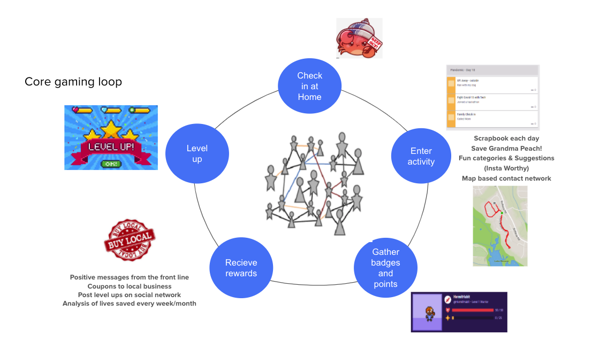
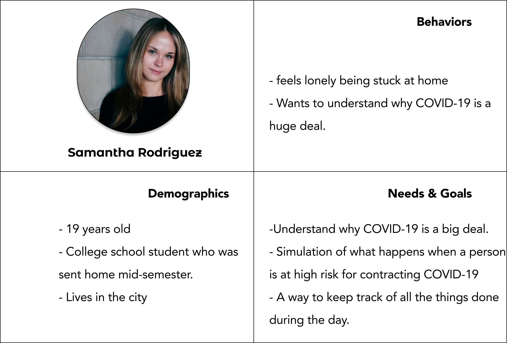
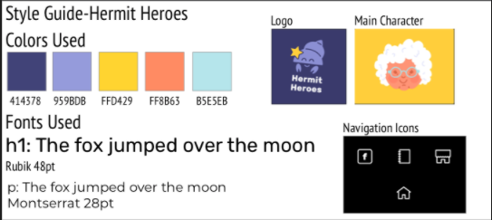
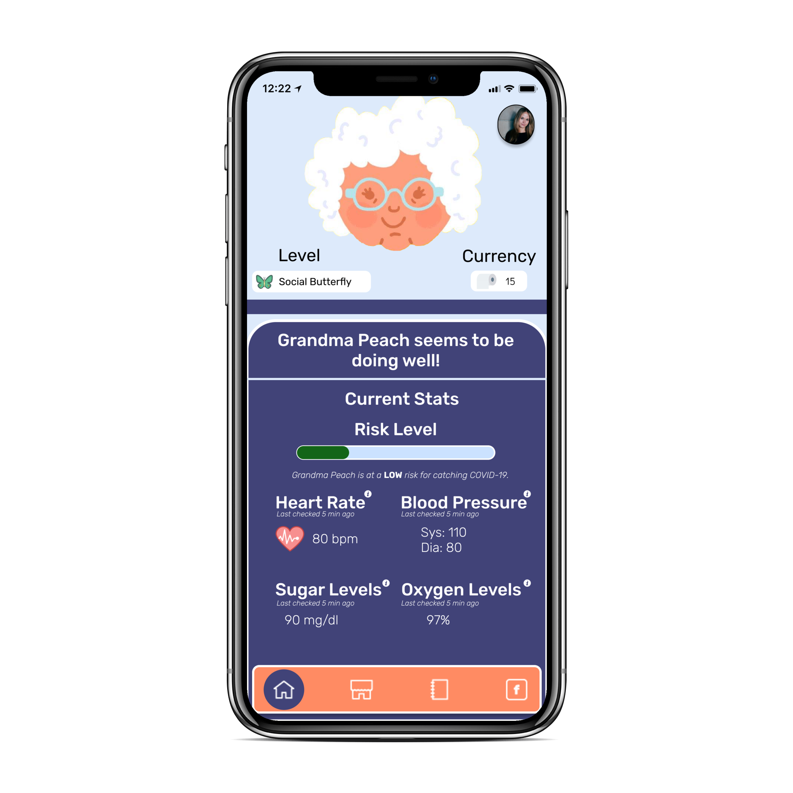
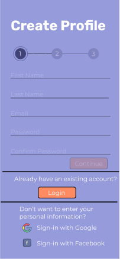
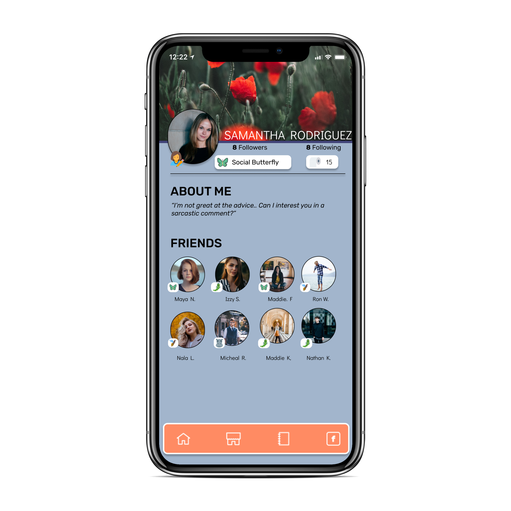

Hermit Heroes turns social distancing into a game. The objective of the game is to ensure that the main character (Grandma Peach) continues to have a low risk of contracting COVID-19. The more indoor activities the user completes, the more toilet paper (currency) the user will earn which can be used to purchase goods for Grandma Peach.
When the COVID-19 pandemic began, many people found it difficult to stay far away from friends and families. Some have complained that social distancing has been more of a hindrance than helpful.
How might we create a game that is entertaining as well as educational?
Our process for this project emphasized on communication, research, and design.
Up until this project, my designs were about web design. This was my first time designing for a game. Therefore, most of my research focused on understanding how to organize the UI of this game. I read different articles, and looked at various designs on Dribbble to get some inspiration on how to design each screen.
My project manager, Ashu Ravichander, already had the concept ready in mind. This saved me some work on the research front. I got to focus more on understanding how games should be optimally designed.
We proceeded to create levels for the user. Since we want the user to feel encouraged to stay indoors during the quarantine, we decided to name our levels that match this intention. The user will start of as being a social butterfly. The ultimate goal is to reach the level of Hermit Hero.
Once I understood her goals, I created a user persona. Meet Samantha Rodriguez.
From there, I started sketching out iterations on how to organize these screens.
Once I finalized how to organize the screens, the illustrator (Bridget Stec) and I worked on creating a style guide.
I proceeded to convert the sketches into final prototypes using Figma.
I wanted to make the game educational which is why I added little information bubbles next to
each of Grandma Peach's medical stats. If the user is interested in the medical details, they would tap
on the button. This opens up a pop-up window with the definition along with some additional information
if they are curious. These stats are not fluctuating. If the risk of contracting COVID-19 is low, those numbers would
show up. If the risk is high, the appropriate numbers are displayed.
The idea of creating a background story came from an old PC game I used to play called Prince of Persia. I thought that if the user could read the story, then he/she would be able to understand the context of the game.
This game allows users to share progress with friends. This feature will allow users to feel connected with others despite not being able to visit them in person.
  